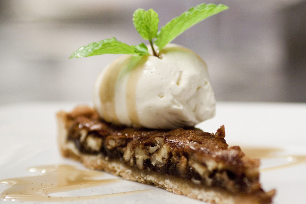

Glutenfri Pecannötspaj inspiration av Italien
Detta är din guide till den bästa bjudpajen någonsin!
Sätt betyg:
poäng: 0
(antal röster: 0st)
-
Pajskal
- 2.5 dl Semper - fin mjölmix
- 0.5 dl Kokosmjöl
- 150 g smör
- 0.5 tsk salt
- 0.5 dl strösocker
- 2 msk vatten
Fyllning
- 2 msk Semper - fin mjölmix
- 125 gr smör
- 1.5 dl strösocker
- 0.5 tsk salt
- 3 dl ljus sirap
- 2 ägg (lätt vispade)
- 1 tsk vaniljsocker
- 150 g pecannötter

- Sätt ugnen på 200 grader.
- Koka upp smör, socker, sirap, mjölsorterna, och salt och
låt det sjuda i tre minuter underomrörning.
- Tag av från värmen och låt fyllningen svalna till rumstemperatur
- Under tiden smeten svalnar blanda ihop alla ingredienser till pajdegen och tryck ut i en pajform.
(Eller de antalet ni anget)
- Förgrädda pajskalet tio minuter i 200 grader.
- Blanda sedan i nötter, vaniljpulver och de lättvispade äggen i kolasmeten.
- Häll fyllningen i pajskalet och grädda pajen 35-40 minuter i 175 grader.
- Låt stå kallt, gärna över natten.
- Valfritt: Servera ev med vispad grädde/glass.
Tillbaka